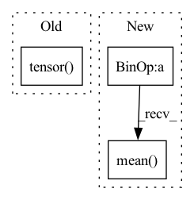

Pattern ID :22149

Before Change
stress))
break
return best_3d_coords, torch.tensor(his)
def mds_numpy(pre_dist_mat, weights=None, iters=10, tol=1e-5, verbose=2):
Gets distance matrix. Outputs 3d. See below for wrapper.
Assumes (for now) distrogram is (N x N) and symmetric
After Change
batch, N, _ = pre_dist_mat.shape
his = []
// init random coords
best_stress = float("Inf") * torch.ones(batch)
best_3d_coords = 2*torch.rand(batch, N, 3) - 1
// iterative updates:
for i in range(iters):
// compute distance matrix of coords and stress
dist_mat = torch.cdist(best_3d_coords, best_3d_coords, p=2)
stress = ( weights * (dist_mat - pre_dist_mat)**2 ).sum(dim=(-1,-2)) / 2
// perturb - update X using the Guttman transform - sklearn-like
dist_mat[dist_mat == 0] = 1e-5
ratio = weights * (pre_dist_mat / dist_mat)
B = ratio * (-1)
B[:, np.arange(N), np.arange(N)] += ratio.sum(dim=-1)
// update - double transpose. TODO: consider fix
coords = (1. / N * torch.matmul(B, best_3d_coords))
dis = torch.norm(coords, dim=(-1, -2))
if verbose >= 2:
print("it: %d, stress %s" % (i, stress))
// update metrics if relative improvement above tolerance
if (best_stress - stress / dis).mean() > tol:
best_3d_coords = coords
best_stress = (stress / dis)
his.append(best_stress)
In pattern: SUPERPATTERN
Frequency: 3
Non-data size: 3
Instances
Fragment ID: 70175055
Project Name: lucidrains/alphafold2
Commit Name: 98e16ad2931a27f90e05df940cff72c00074028d
Time: 2021-01-17
Author: ericalcaide1@gmail.com
File Name: utils.py
M Class Name: AnonimousClass
N Class Name: AnonimousClass
M Method Name: mds_torch(5)
N Method Name: mds_torch(5)
M Parent Class:
N Parent Class:
M File Name: utils.py
N File Name: utils.py
M Start Line: 174
M End Line: 205
N Start Line: 181
N End Line: 215
'>
Before Change
kld_weight = kwargs["M_N"] // Account for the minibatch samples from the dataset
log_p_x_z = ((recons - input) ** 2).flatten(1).mean(-1)
pi = torch.tensor(np.pi, dtype=torch.float)
E_log_q_z = torch.sum(-0.5 * (eps ** 2) - 0.5 * torch.log(2 * pi) - log_var, dim = 1)
E_log_p_z = torch.sum(-0.5 * (z ** 2) - 0.5 * torch.log(2 * pi), dim = 1)
After Change
kld_weight = kwargs["M_N"] // Account for the minibatch samples from the dataset
log_p_x_z = ((recons - input) ** 2).flatten(2).mean(-1) // Reconstruction Loss
kld_loss = -0.5 * torch.sum(1 + log_var - mu ** 2 - log_var.exp(), dim=2)
// Get importance weights
log_weight = (log_p_x_z + kld_weight * kld_loss) //.detach().data
// Rescale the weights (along the sample dim) to lie in [0, 1] and sum to 1
weight = F.softmax(log_weight, dim = -1)
// kld_loss = torch.mean(kld_loss, dim = 0)
// loss = log_p_x_z.mean(0) + kld_weight * kld_loss
loss = torch.mean(torch.sum(weight * log_weight, dim=-1), dim = 0)
return {"loss": loss, "Reconstruction Loss":log_p_x_z.mean(), "KLD":-kld_loss.mean()}
def sample(self,
num_samples:int,
'>
Fragment ID: 70175071
Project Name: antixk/pytorch-vae
Commit Name: 692e7a333a9ceb10076a912fbd977f5d4e8e1349
Time: 2020-01-21
Author: anandkrish894@gmail.com
File Name: models/iwae.py
M Class Name: IWAE
N Class Name: IWAE
M Method Name: loss_function(1)
N Method Name: loss_function(1)
M Parent Class: BaseVAE
N Parent Class: BaseVAE
M File Name: models/iwae.py
N File Name: models/iwae.py
M Start Line: 133
M End Line: 153
N Start Line: 139
N End Line: 161
'>
Before Change
output = torch.tensor(output,dtype=torch.float32, device=self.device,requires_grad=True)
target = torch.tensor(target,dtype=torch.float32, device=self.device, requires_grad=True)
bin_high = torch.tensor(bin_high,dtype=torch.float32, device=self.device, requires_grad=True)
bin_low = torch.tensor(bin_low,dtype=torch.float32, device=self.device, requires_grad=True)
if output > target: //closer to higher edge
loss = torch.max(torch.tensor(math.log(1+ abs(output - target)),dtype=torch.float32, device=self.device, requires_grad=True), (output - bin_high))
if output < target: //closer to lower edge
After Change
k =1
loss = greater_mask * torch.max(torch.tensor(k* torch.log(1+ torch.abs(outputs - targets)),dtype=torch.float32, device=self.device, requires_grad=True), (outputs - bin_high)) + lesser_mask * torch.max(torch.tensor(k* torch.log(1+ torch.abs(outputs - targets)),dtype=torch.float32, device=self.device, requires_grad=True), (bin_low - outputs))
return loss.mean()
'>
Fragment ID: 70175060
Project Name: atmacvit/bincrowd
Commit Name: acb86088468ea073cb8983f27fa97db906f87933
Time: 2021-07-20
Author: khamkarmansi@gmail.com
File Name: optimization/log_loss.py
M Class Name: Log_Loss
N Class Name: Log_Loss
M Method Name: forward(5)
N Method Name: forward(4)
M Parent Class: Module
N Parent Class: Module
M File Name: optimization/log_loss.py
N File Name: optimization/log_loss.py
M Start Line: 12
M End Line: 39
N Start Line: 9
N End Line: 30